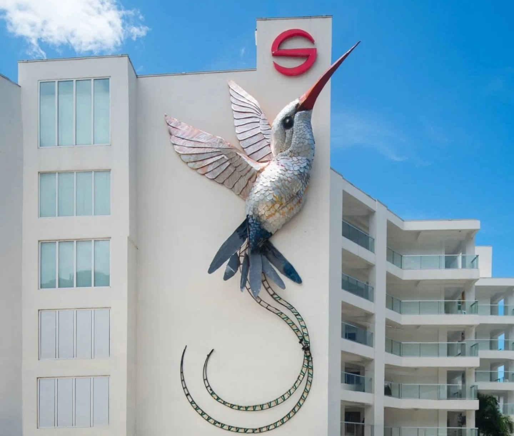

Selected Work
Made for
the real world.
Monumental sculpture, public art and immersive environments created for hospitality, museums, cultural spaces and public life.
Selected Projects
Selected projects.
Together We Rise
Together We Rise
62-foot monumental sculpture
A monumental sculpture created around the idea of Jamaica rising and rebuilding after Hurricane Melissa. The work incorporates a Tree of Life, representations of Jamaica’s 14 parishes through leaves, and scenes reflecting resilience, recovery and community.
Natural History Museum of Jamaica
Natural History Museum of Jamaica
Immersive natural environments
A large-scale sculptural installation recreating Jamaican natural environments, including dry forests, wetlands, rainforest canopy, coral reefs, caves and marine environments. The project involved extensive research, mould-making, sculpting, painting and installation, incorporating recycled materials.
The Eco-Champion
The Eco-Champion
10-foot recycled-material sculpture
A 10-foot sculpture of a runner created from recycled plastic bottles and produced during the Sagicor SIGMA Corporate Run. The sculpture was built over five days, with recycled materials also used to create details within the figure.
National Heroes
National Heroes
Monumental portrait sculpture
A collection of highly detailed sculptural representations of significant Jamaican cultural and historical figures, including Nanny, Marcus Garvey, Bob Marley and Jimmy Cliff.
Port Authority Sculptures
Port Authority Sculptures
Large-scale heritage sculptures
A series of large-scale sculptural pieces created for the Port Authority, including approximately 10-foot cannon replicas designed to resemble historical 18th-century pieces and incorporate the appearance of weathering and age.
Heritage Mall Elephant
Heritage Mall Elephant
Monumental animal sculpture
A large-scale elephant sculpture created as a sculptural installation for Heritage Mall.
Hellshire Beach
Hellshire Beach
Architectural & sculptural structures
Design and construction work for Hellshire Beach, including an entrance vestibule and gazebos.
Matterhorn
Matterhorn
34–40-foot mountain sculpture
A large-scale sculptural mountain approximately 34 feet high and 40 feet wide, representing one of Cole’s earlier monumental-scale projects.
Jamaica 60 — Diamond Heroes Float
Jamaica 60 — Diamond Heroes Float
Sculptural parade installation
Sculptural work created as part of the Jamaica 60 celebrations and the Diamond Heroes float.
Bob Marley
Bob Marley
Portrait sculpture
A sculptural representation of Jamaican musical icon Bob Marley created for the Trench Town Culture Yard.
Miss Lou
Miss Lou
Portrait sculpture
A sculptural representation of Jamaican cultural icon Louise Bennett-Coverley, better known as Miss Lou.
Jimmy Cliff
Jimmy Cliff
Portrait sculpture
A sculptural representation of Jamaican musician and cultural figure Jimmy Cliff.
12-foot Horse — P.F. Chang’s
12-foot Horse — P.F. Chang’s
12-foot sculptural installation
A 12-foot horse sculpture created for P.F. Chang’s following a commission connected to Jamaica Fibreglass Products.
Clarks / Wallabee Installation
Clarks / Wallabee Installation
Monumental footwear installation
A large-scale installation inspired by the iconic Wallabee Clarks shoe, created for S Hotel Montego Bay and produced with a team of young creatives.
International commissions
Looking for something
that doesn't exist yet?
Explore what Scheed can create for public spaces, destinations, museums, hospitality and cultural projects.
Explore Capabilities ↗